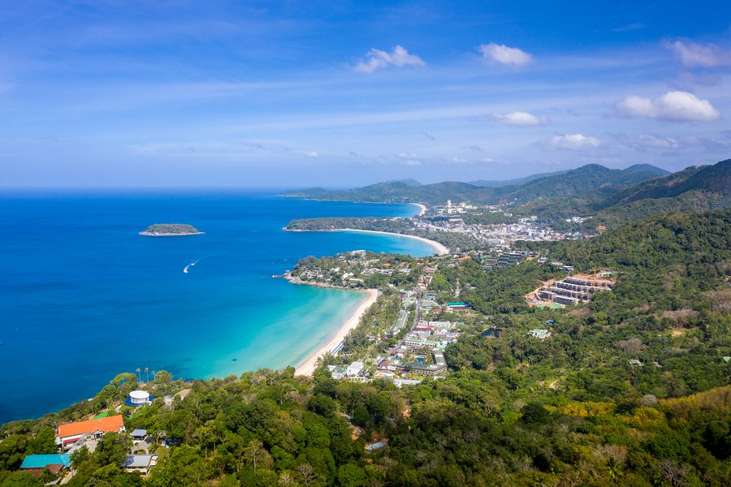

Tracy and Tom's Total Travel
Our Story
We started our company in 2001 after our anniversary trip to Europe. We fell in love with traveling and wanted to share our passion with others.
We knew we wanted to help others tackle international travel, so we created products and services to help. We know how stressful traveling is!
That's why we are here to help you plan the trip of your dreams!
Being in our 20's when we began was a very difficult journey. Our knowledge and client base was so small and we could only help people plan trips
to Europe. Since then, we have been able to expand our base and connect with people in over 75 countries! We look for natives as well as expert
travelers to share their knowledge with us. Even after being open for 20 years, we still have so many places to explore ourselves! That's why we
work with so many people around the globe to give you the best experience possible while abroad.
Since opening our travel company, we have visitied some amazing places!
One of our favorites is Thailand! Here is a lovely picture we took in Phuket.

For new travelers our top destinations are:
- United Kingdom
- Greece
- Australia
- France
For other recomendations check out Best Places to Travel in 2022
Some things you should keep in mind when deciding where to travel:
- Budeget
- Time of Year
- Cultures
We hope we have persuaded you to come travel the world with us!
Bon Voyage!
For further information, you can use this point of contactKeagan's email